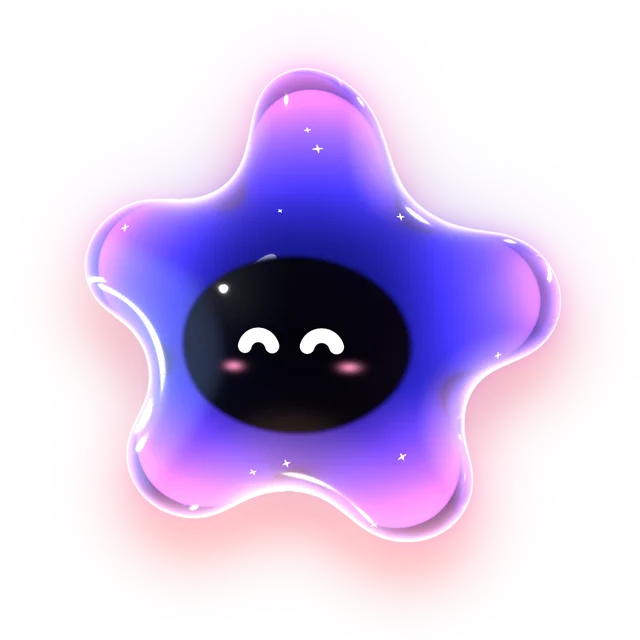

Know the moment an agent needs you.
A small island in your MacBook's notch for Claude Code and Codex. It shows every session and brings their questions to you.
Free and open source. macOS 14 or later.
Give it a try.
Hover the notch.
Everything built in.
Hover a tile.
- SessionsEvery agent at a glance
- ApprovalsAllow or deny in the notch
- Plan limitsWarns before you run out
- Jump backStraight to the right tab
- Long commandsA tick when the build ends
- CalendarNext meeting, one-click Join
- Now playingSpotify and Music
- Quick captureOne line, dates understood
- SystemCPU, memory, battery
- Watch modeQuiet while you watch
- CharactersColour shows the effort
- Status APIYour scripts in the notch
And more
Today with Reminders · dictation with Wispr Flow · camera and mic in use · keep awake · the wheel · connectors · a pill on Macs without a notch · hidden from screen sharing.
Planned: more agents (Copilot CLI, Cursor, Gemini CLI, opencode) · answering questions and plans · file shelf, clipboard and a palette · any player.
Local. Open source.
- No account, no telemetry
- Never reads the Keychain or cookies
- Hidden from screen sharing
- Apache-2.0, characters included
- One-click setup, exact removal
- Connectors, packs, status API
Install
Signed builds are on the way. Today, build it in a minute:
git clone https://github.com/juliokoelle/starnotch.git
cd starnotch && ./scripts/build-app.sh
open build/Starnotch.appmacOS 14 and the Swift command line tools. No Xcode.
Questions.
Which agents does it work with?
Claude Code and Codex, in the terminal, their desktop apps or your editor. More tools are planned.
Can it approve something without me?
No. Only your click or key allows. No answer in 60 seconds, and the terminal asks as usual.
Does anything leave my Mac?
No. It reads the agents' local session files, read-only. No account, no telemetry.
What does it change on my Mac?
Nothing until you click. Setup lists each change, keeps a backup, and removes it again exactly.
My Mac has no notch.
Then it's a small pill at the top center of the display you choose.
What does it cost?
Nothing. Free and open source under Apache-2.0.
Who's the little star?
That's Tara. Her name is Sanskrit for “star”, from a root meaning “to carry across”: in old stories she guides travellers to the other shore and turns up the moment you call. On your Mac the job is smaller, but she takes it just as seriously: she watches your agents while you're elsewhere, and shows up the second one needs you.
